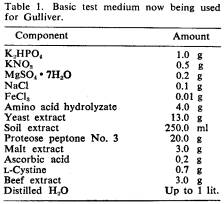

Reprinted from Science, October 12, 1962, Vol. 138,
No. 3537, pages 114-121
Copyright © 1962 by the American Association for the
Advancement of Science
“GULLIVER”—A QUEST FOR LIFE ON MARS
Radioisotopes are used in a miniature instrument
designed
to detect life during early probes of the planet.
Gilbert V. Levin, Allen H. Heim, John R. Clendenning,
Mary-Frances Thompson*
*The authors are affiliated with Resources Research,
Inc., Washington, D.C.,
a subsidiary of Hazleton Laboratories, Inc., Falls
Church, Virginia.
Biologists are late-comers to the field of space
exploration. The development of systems capable of launching satellites and
space probes requires a highly coordinated and intensive effort in the physical
sciences. It was only natural that such a program, developed largely by
physicists, should emphasize physics in early space experiments. Moreover, many
experiments in physics were necessary first steps into space. As payload
capacity for probing space was actually achieved, biologists, who hitherto had
had little cause for more than general interest in rocketry, became more
attentive to the possibilities thus opened for biology and stressed the need
for including their science in space program planning. Experiments were
incorporated in instrument packages. and effects of the space environment on
the metabolism and genetics of microorganisms and small animals were studied.
The manned-flight and space-medicine efforts have also provided biological
information, although these programs are directed toward accommodating man in
space. Now, with the continued growth of thrust and guidance capabilities,
biologists suddenly find themselves on the brink of one of man’s most
tantalizing experiments—the search for life beyond his planet.
With the beginning of modern science, information slowly
accumulated bearing on the possibility that life exists on other planets. a
question hitherto thought approachable only through philosophy and theology.
The search for scientific data on this question had been confined to our solar
system because of technological limitations. From feeble rays of light,
carefully gathered and analyzed, astronomers and physicists deduced some
pertinent facts or indications. Recently, radar and light waves have been
directed at the planets so that the reflected energy might bring back with it
information concerning surface conditions. Observations of the moon and planets
have been summarized by Kiess and Lassovsky (1), by Kiess and Birney (2), and
by the Space Science Board of the National Academy of Sciences (3). Most
recently, Salisbury (4) discussed findings pertaining to the question of life
on Mars. On the basis of observations and deductions, interest had focused on
both Venus and Mars. However, recent data obtained by Mayer and his associates
(5) have convinced these workers and others that the surface temperature of
Venus is above the melting point of lead. Consequently, Mars is now thought to
be the planet (with the exception of the earth) most capable of supporting
life, and it has been selected by the National Aeronautics and Space
Administration as the first planet to be probed by instrumented landings in an
effort to find evidence of life forms. Landings within this decade are planned
(6) which conceivably could resolve this age-old speculation. Among the
instruments tentatively selected for the first landing is “Gulliver,” a
miniature mechanical device which, like the Gulliver after whom it is named,
will seek exotic forms of life.
Exploration of Mars
While some biologists doubt that life exists elsewhere in
our solar system, even the doubters generally agree that life-detection
experiments should be included in the exploration of Mars. There are also
“believers” who think, or at least hope, that the search will be fruitful. Surface
features and atmospheric features provide the principal evidence in support of
the two views. The surface features include (i) a relatively smooth and
mountain-free land surface; (ii) extensive, light-colored areas which have
been called deserts; (iii) polar caps, probably of water ice, which change
seasonally; (iv) darker areas or bands of gray (or perhaps green or other
colors), which some attribute to moisture advancing from the polar caps
seasonally in each hemisphere; (v) the disputed “canals”; (vi) so-called
“oases” or “lakes” in which the canals meet; (vii) a reddish surface
color; (viii) seasonal area color changes, from green or gray in the
spring to brownish-gray in the fall, suggestive of vegetation;
(ix) spectrographic evidence of carbon-hydrogen bonds in large organic
molecules, regarded by some as the strongest evidence of life; and
(x) temperatures ranging from -70°C at the poles to 20°C during the summer
season of the southern hemisphere. The atmospheric features include (i) an
atmospheric pressure one-twelfth that of the earth; (ii) white cloud
formations resembling high cirrus clouds and thought by some observers to be
moisture, chiefly in the form of ice crystals; (iii) a blue haze, which
might be ice crystals of water or carbon dioxide, or perhaps smoke;
(iv) yellow clouds, interpreted as dust storms in high winds;
(v) carbon dioxide at a relative concentration twice that in the earth’s
atmosphere; (vi) the possible presence of oxides of nitrogen;
(vii) small quantities of moisture or none at all; and (viii) very
small quantities of free oxygen, or none at all.
Kiess and his associates (7) proposed that the polar
caps, colored areas, migrating bands, clouds, blue haze, and other phenomena
are all various oxides of nitrogen in gaseous, liquid, and solid states. They
concluded that life as we know it could not exist in the heavy concentrations
of toxic nitrogen peroxide which they ascribe to the atmosphere. However, the
theory has been contested because of the lack of clear evidence of oxides of
nitrogen in spectroscopic analyses.
Scientific discussions of extraterrestrial life are
almost always concerned with forms of life somewhat similar to those on the
earth. Divorced from the framework of our own experience, speculation becomes
meaningless. It is difficult to imagine what conditions would be necessary for
the maintenance of completely novel life forms, such as forms based on silicon,
or existing, say, in solid state. We can only guess at the types of instruments
that might best be used to detect such forms—forms which even a human observer
might fail to recognize. Hence, since we know that the many life forms on our
planet are basically similar to one another in biochemistry and in structure at
the cellular level, and since we know how to look for them, it is only logical
that the first extraterrestrial life probes should seek life of an aqueous and
carbonaceous nature. Of course, the possibility remains that alien life which
evolved independently, isolated from our own, may have nothing in common with
earth forms, but current knowledge dictates that the familiar be sought first.
Evidence is found on the earth indicating that life as we
know it could survive many of the severe environmental conditions that exist on
Mars. Organisms grow in arid deserts, hot springs, arctic regions, salt ponds,
hydrocarbons, acids, and various extreme soil conditions. Viable microorganisms
have been recovered from within manufactured plastic and electronic parts (8).
Several attempts have been made to investigate the ability of certain
microorganisms to survive simulated Martian conditions. Organisms such as Clostridia
not only survived but grew in such tests (9).
Where, on Mars, should the exploration for life begin?
The presence of moisture would seem to be the key, and moisture may exist in
sufficient concentrations only locally. Observers have suggested that the
moving bands mentioned earlier are bands of moisture advancing seasonally from
the polar ice caps. Some scientists think we should try to obtain a moisture
map of Mars by orbiting an infrared scanning satellite around it before
undertaking exploration to detect life. Such a map might indicate that life
exists only at particular times and places. The life probe would be sent to the
area nearest the equator that has moisture and other favorable characteristics.
This approach would make it possible to select carefully a place or places to
land the necessary life-detection apparatus and to choose the most favorable
time of the year and even the most favorable portion of the day for conducting
the experiment. While this may be the ideal approach, it would be some time
before the moist regions could be charted, and an even longer time before we
would have the capability to land an instrument package at a particular time
and place on Mars. On the other hand, if the observed yellow clouds are dust
storms caused by high winds, microorganisms would be widely disseminated and
localization of moisture in life-sustaining quantities might not be a
significant factor. If bands of moisture traverse the planet, microorganisms
might thrive during the moist intervals, remaining dormant during dry periods,
or they might be continually blown about, advancing with the moist front.
Otherwise, some unlikely form of motility must be hypothesized, for life cannot
evolve anew during each moist period. Thus, at least in spore or dormant state,
life on Mars may be ubiquitous on the surface and directly above and beneath
the surface, as it is on the earth.
The first level of life that we should seek is the
microorganism. The evolutionary status of Mars may be such that micro forms
exist but macro forms do not. On the other hand, if macro forms exist, there
would almost certainly be micro forms existing as key links in the ecosphere.
It also seems that a micro form would be easier to capture and examine than a
macro form, although it is quite possible that microorganisms exist on Mars in
far fewer numbers per unit area than on the earth. When all of the foregoing
factors are taken into consideration, there seems to be a chance that an
appropriate experiment with limited probing facilities, landed without a high
degree of site selection, could succeed in detecting life on Mars, should any
exist. Although the hazards of rocketry, guidance, and mechanical failure may
make the chance of success a fairly slim one, the reward would be so great that
the National Aeronautics and Space Administration has decided to include a life
probe in the first Mars landing. Furthermore, delay would jeopardize the
nation’s opportunity for a “first.”
Experimental
Considerations
A number of serious restrictions are necessarily imposed
on any such instrumentation carried aboard a planetary probe in the initial
series. Paramount among these are restrictions resulting from uncertain
knowledge of the environment in which the experiment will be required to
function. The environ mental factors cited earlier were determined through
visual and spectroscopic observations; the results of these observations are not
accepted without reservation, and in some cases they are disputed. However,
until more extensive data are received from space probes, the present
information must serve as the sole guide.
Because of the tremendous thrust needed for
interplanetary voyages, minimum energy courses must be followed. Thus,
launchings can be made only during periods that occur every 2 years when the
earth and Mars are in opposition. Weight restrictions are very great, markedly
affecting the nature of the experimental instruments and of the electronic
equipment for transmission of data. Instrumentation must be light, and the
power requirement must be minimal. The latter requirement directly limits the
period available for effective transmission of data; according to present estimates
this would range from 4 to 24 hours. Hence, any life probe must yield
information within the short time available for experimentation. In contrast to
the short operational time, travel time will be 220 to 250 days. Instruments
and reagents must withstand the long flight in a vacuum, unless the capsule is
pressurized, and must also withstand the external radiation to which they will
be subjected. Plans call for a controlled capsule temperature during the
flight, although some uncertainty exists concerning control on the surface of
Mars. Despite the requirement for low weight, the instruments must be rugged
enough to withstand the severe shocks and vibrations of launching and landing.
Possibly the most difficult problem in preparing a
capsule is sterilization. Because it is believed that microorganisms from the
earth might survive the Martian environment, all possible means must be
utilized to prevent carrying any contaminants to Mars. Such contamination might
result in a false report of indigenous life. The significance of finding
earth-type microorganisms on Mars thereafter would be doubtful, and the
important task of determining whether life forms on the two planets have a
common origin would be rendered far more difficult, or even impossible. Should
Mars be ripe for the evolution of life, yet sterile, contamination would carry
with it the awesome moral responsibility of changing the evolutionary course of
the planet. Many scientists would regard such contamination as an unparalleled
transgression and tragedy. Present plans require dry-heat sterilization at
135°C for 26 hours in conjunction with the use of ethylene oxide. All
instruments and experiments must be able to withstand these preflight
sterilization procedures.
Limitations imposed on a life-seeking experiment by our
ignorance of the Martian environment and by the state of rocket technology
demand that the instrumentation meet the following requirements. It must be
light in weight, small, and rugged enough to withstand shock, low temperature, low
pressure, and vibration; it must not deteriorate during 8 or 9 months of space
flight, must operate on minimum power, and must be designed for rapid
completion of the experiment; it must be sensitive to a small number of
organisms and responsive to the broadest possible spectrum of species; it must
be simple and reliable, must produce unambiguous results, and must be
compatible with simple telemetry and capable of withstanding heat
sterilization.
Radioisotope Technique
Gulliver was designed to meet these requirements (10).
The highly sensitive radioisotope technique is used to detect the evolution of
gas as a common product of metabolism. Other systems for detecting the
existence of microorganisms currently being developed under the NASA program
are based upon direct microscopy via video transmission, optical density
changes in various growth media, detection of specific enzymatic reactions
through fluorescent tagging, and identification of organic compounds through
gas chromatography and spectroscopy. Recently, NASA tentatively designated
Gulliver as the system to be included in the first capsule to be sent to Mars.
In essence, Gulliver detects the evolution of radioactive
gases as end products derived from labeled substrates metabolized by microorganisms.
These end products are the result of a number of alternative metabolic
reactions, and a system based on their detection has a greater chance of
success than one based on detection of a specific intermediate via a particular
enzymatic reaction. Enzymes are complex molecules whose intricate structures
render them highly specific in reacting with substrates. It is conceivable
that, in a separately evolved biology, enzyme structures and intermediate
products would be different from those on earth but that some of the same end
products would be produced. The relative simplicity of gases evolved by
microorganisms as compared with the complexity of the enzymes and substrates
strongly favor this possibility. Conversely, if life exists which evolves no
gases, or which evolves gases quite different from the few familiar ones of
metabolic origin, then the enzymes and intermediate products will almost
certainly be different from those we know. While the most universally evolved
gas is carbon dioxide, the possibility of also seeking other gases, such as
hydrogen sulfide, ammonia, molecular hydrogen, and methane through substrate
labeling is being considered.
Utilization of the evolution of C14O2
from radioactive substrates as an index of microbial metabolism and growth has
been investigated, and methods have been developed by Levin and his coworkers
over the past 7 years (11). Experience in developing a rapid means of detecting
coliform organisms provided the basis for this approach to exobiology.
Investigations by Heim and his co-workers on the use of radioactive isotopes to
determine the action of antimicrobial agents (12) also support this concept and
the feasibility of establishing a control for the test by inhibiting
metabolism. The use of the radioisotope method as a probe for extraterrestrial
life was proposed to NASA in 1959, and laboratory development has been under
way for more than a year and a half. The principal objective of the program is
the development of a medium which will support the growth of the greatest
possible number of microbial species.
Medium and Test Organisms
Appropriately labeled compounds must be added to the
medium. Several criteria were used to determine what isotopes would be
incorporated into the test media. The isotopes must be metabolized and
incorporated into an evolved gas; they must be utilized by a wide range of
organisms; and they must exhibit chemical stability. On the basis of these
criteria a number of radioactive substrates have been tested, singly and in
combination. These have included sodium formate-C14, glucose-C14
(uniformly labeled), sodium acetate-1-C14, sodium pyruvate-1-C14,
glycine-2-C14, cysteine-S35, a yeast extract randomly
labeled with C14, and an Escherichia coli extract randomly
labeled with C14. The most satisfactory of these has been a
combination of formate and glucose. The activity level is 5 microcuries of each
substrate per milliliter of medium. With these substrates, a medium has been
developed which supports the evolution of detectable levels of C14O2
by representative bacteria, streptomycetes, fungi, and algae within a
period ranging from minutes to several hours. The group which responds includes
aerobes, anaerobes, facultative anaerobes, thermophiles, mesophiles,
psychrophiles, heterotrophs, phototrophs, autotrophs, spore formers, and
nonspore formers. The composition of the medium is shown in Table 1, and
typical responses are shown in Table 2. Photosynthetic anaerobes may be
prevalent on Mars, and it is especially encouraging to find a positive response
from Rhodospirillum rubrum which was grown anaerobically and
photosynthetically at the same time. Positive responses, although variable and
relatively slow, have been obtained from the autotrophs Thiobacillus
novellus and T. thiooxidans. Other media studied in this approach
include a basic salts medium, a salts-plus-casein hydrolyzate medium, a medium
containing some of the extracts now being used, and a simple soil extract with
radioactive glucose and formate. Response to the other media has indicated that
the degree of complexity of the medium of Table 1 is the most satisfactory. One
may hope that, at best, 80 to 90 percent of the wide variety of organisms
tested will respond. If microbial life does exist on Mars, it is likely that it
will be heterogeneous and that some types will respond to the medium which is
ultimately developed. It should be pointed out that testing of most of the
organisms has been under environmental conditions approximating the habitat of
the type in question. The purpose has been to determine a response under
natural conditions, on the assumption that Martian organisms will be tested
under their own conditions. In other words, no attempt is being made to impose
Martian conditions in the present testing of organisms.
|  |
Mixed populations in soils have been tested, with
excellent responses. Figure 1 shows the results obtained from 1 milligram of a
field soil which contained approximately 1000 cells, as determined by plate
count. The response was rapid and large. The lag phase was very short, and the
stationary phase had not been attained by the time the experiment was
terminated. Figure 2 shows the response obtained when a sterilized
sample-retrieval line was dragged across a pile of sand and gravel. The shape
of the curve demonstrates the presence of at least two different types of
organisms, in that two lag periods and two exponential slopes are present. This
type of response has been observed frequently in tests of soils. In Fig. 3 the
response obtained by drawing a sterilized sample-retrieval line over an asphalt
surface is shown. The lag phase is longer than the first lag phase shown on the
sand and gravel curve of Fig. 2 and may be due to a different type of
vegetative cell or, more probably, to the presence of a spore population which
would require a longer time to achieve exponential growth.
Of considerable interest are the responses obtained from
desert soils, shown in Figs. 4 and 5. The soils were collected aseptically from
desert areas believed to be relatively free from the influence of humans and
macro forms of life in general. Figure 4 shows the curves obtained from soil
samples as small as 25 and 50 milligrams. (The quantitative similarity of the
results from the different-size samples indicates unequal distribution of
organisms.) The curves in Fig. 5 show rapid metabolic responses from desert
organisms in both liquid and solid media. The ability to use solid media is
important, as it may obviate the requirement for attitude control of the device
on the surface of Mars. This problem is mentioned below.
These experimental results indicate the validity of the
life-detection principles used and the practicability of the sample-collection
system. The type of response demonstrated, coupled with results from an
inhibited control, would demonstrate the presence of life with a high degree of
certainty.
Gulliver
Figures 6 and 7 show the first two models of Gulliver
(13). An “exploded” view of the second, and current, model is shown in Fig. 8.
The instrument weighs approximately 1½ pounds and demands a power peak of 2
watts for several minutes and power of 200 milliwatts thereafter. According to
the present concept, the life-detection experiment would be conducted as
follows. Gulliver is mounted inside the instrument capsule of the vehicle. When
the vehicle is still some distance from Mars, the capsule is ejected into a
capture trajectory. The main body of the vehicle, containing the bulk of the
various experiments associated with the mission, conducts these other investigations
while flying by the planet, radios the data to the earth, and continues on into
space. The capsule enters the Martian atmosphere and deploys a parachute to
effect a “soft” landing. After the capsule ceases rolling, an ampule containing
the radioactive medium is broken. Simultaneously, an ampule containing a weak
acid is broken; the acid is thus permitted to generate nonradioactive carbon
dioxide from an adjacent carbonate or bicarbonate. A pressure-release valve
permits the gas to flush the radioactive medium to remove low levels of C14O2
generated within the medium by radioactive self-degradation during the
voyage. The flushed gas is vented to the Martian atmosphere through a
pressure-controlled valve. During this flushing operation, which lasts several
minutes, two projectiles mounted in the capsule (each containing 23 feet of
sample-collection line) are fired across the Martian terrain. One end of each
line is attached to the reel inside the culture chamber. The other end is
merely coiled inside the projectile head and is thus laid out over the ground
surface. The lines, which are impregnated with Silicone grease for maximum
adhesion of particulate matter, are wound into the culture chamber, carrying
with them particles of soil obtained from the 46 lineal feet of contact with
Mars. Weak spots, or tensile fuses, are built into the lines so that, in the
event the lines become tangled with objects on the terrain, failure will occur
at a point close to the obstruction, permitting return of the greatest possible
amount of sample. While the sample port of the culture chamber is open to
permit entry of the lines, the interior volume reaches equilibrium with the
Martian atmosphere. The temperature of the medium will be kept slightly above
freezing; in other respects the environment in the chamber and the local
environment will be identical. After the lines have been reeled inside the
culture chamber, the port closes, sealing the chamber. A background count of
the chamber is made. The radioactive broth is then transferred from the
flushing chamber into the culture chamber, immersing the sample-retrieval
lines. Mounted immediately above the culture chamber is a solid-state, beta
detector coated with barium hydroxide. The C14O2 evolved
in the culture migrates to the detector and precipitates on it as barium
carbonate. A system of baffles between the medium and the detector prevents
direct reading of beta activity in the medium by obstructing the line of sight.
At 15-minute intervals the radioactivity accumulated on the detector is read by
a scaler, and the data are relayed directly to the earth by radio transmission.
The second model of Gulliver has been field-tested.
Figures 9 and 10 show the results obtained from such tests. In all these
figures the presence of at least two different organisms is clearly evident.
There is also a possibility that three organisms are represented in Fig. 9. In
the case of Fig. 9 the test was made by first sterilizing the basic instrument
without the electronic components but with projectiles, retrieval lines, motor,
and charges in place. With all openings to the outside covered to maintain
sterility, the instrument was carried into the field, and the entire procedure
was carried out by manual application of electric pulses from a battery. After
the retrieval lines had been reeled into the chamber the unit was carried into
the laboratory, where the detector and scaler were connected and the
radioactivity was monitored. Sample collection was made from frozen ground in a
Washington park while the air temperature was about 0°C. Modifications of the
experimental procedure were made in obtaining the results shown in Fig. 10. A
programmer was used to sequence and carry out the entire procedure; the tests
were conducted during warmer weather and were completed outdoors instead of in
the laboratory. Of two complete units planned for the capsule, one serves as a
control for the experiment through injection of an antimetabolite. While
generation of the typical population growth curve is good evidence of metabolic
activity under the conditions of the test, if, with a similarly inoculated
chamber into which an antimetabolite had been introduced, the curve were
attenuated, the case for life would be difficult to dispute. Furthermore, in
the event that the cells are in a lag or resting phase or that the generation
period is so long that the exponential portion of the curve is not observed,
the control permits detection of respiration levels of C14O2
evolution. Of course, selection of a universal antimetabolite for hypothetical
organisms is hardly an easier task than development of a universal medium, but
here again terrestrial biology will be called upon.
Although the basic practicability of Gulliver has been
demonstrated and test data have been obtained from the instrument, much more
remains to be done. A third model is now being designed. The principal
innovation will be alteration of the sample-collection projectile system and
the medium-handling system to render the instrument omnidirectional—that is, to
permit it to function regardless of its final attitude of rest on Mars. Great
uncertainty about the fate of the capsule after it lands is inevitable, and a
requirement for a particular degree of attitude control would decrease the
chance of success. For example, if the device were to come to rest upside down,
the medium, when released into the culture chamber, would flow downward onto
the beta-activity detector and ruin the experiment. The use of a fixed or
solid-state medium is under development, as a solution to this problem.
Research to improve the medium is continuing, as are
efforts to increase the sensitivity of the radioactivity-counting technique. As
mentioned earlier, incorporation of other labels will be explored. If other
labels are included, the gas adsorption surface will have to be changed so that
it has an affinity for the various labeled gases that might be evolved.
Extensive time-response curves are being accumulated for the test organisms in
pure cultures and soils, for comparison with results from the Mars experiment
and for study of the sensitivity of the method with the different species
through correlation of response levels with size of inoculum (14).
Significance of the
Experiment
What are the possible conclusions to be drawn from the
data Gulliver may transmit from Mars? A positive response from the test chamber
and a negative or significantly lesser response from the control chamber would
be strong grounds for concluding that life exists on Mars. It is likely that
such a result would give some information concerning the life found. The
existence of more than one type of microorganism, the physiological state of
the organisms, the duration of lag periods and generation times might be
deduced from the data. If both test and control chambers gave positive results,
this might be interpreted as evidence that the life found was resistant to the
antimetabolite, that the antimetabolite was not injected, or that high
background radiation masked the experiment. In this case, the shape of the
curves might indicate which conclusion was the most credible. Any positive
response might be the result of contamination from the earth, but sterilizing
the capsule and instruments will have made such contamination very unlikely.
The discovery of life would create the need for
increasingly sophisticated experiments. Only slight modification in approach
and instrumentation would be required to adapt the present system to perform a
wide variety of analyses. Specific metabolic reactions under various environmental
and nutritional conditions could be determined for comparison with reactions of
earth organism.
On the other hand, negative results would indicate that
microorganisms having a biochemistry similar to those on earth were not present
at the time and place of sampling. Equipment failure could also cause negative
results. The data obtained might pinpoint some failures, but others conceivably
could not be distinguished from negative test results, since weight
restrictions would not permit inclusion in the capsule of extensive systems for
verifying the operation of the equipment. Under no conditions would a negative
response rule out the possibility of life, but a series of negative results
might lead one to suspect that, if organisms exist on Mars, they are very
different from any on earth.
The ultimate aim of exploration to detect life on Mars is
to determine types, habitats, environmental ranges, distribution, population
densities, and biochemistry for comparison with life on the earth. From such studies
the important question of whether life on the two planets is of common origin
may be answered. In any case, whether or not life forms on Mars and the earth
are related, new knowledge would be gained concerning the evolution of life on
the two planets.
References and Notes
1. C. C.
Kiess and K. Lassovsky, in “The Known Physical Characteristics of the Moon and
the Planets,” Georgetown College Observatory Monograph No. 12
(ARDC-TR-58-41) (1958).
2. C. C.
Kiess and D. S. Birney, in “Recent Studies of the Known Physical
Characteristics of The Moon and The Planets,” Georgetown College Observatory
Monograph No. 15 (AFCRL-TN-60-666) (1960).
3. H. C.
Urey, in “Science in Space,” National Academy of Sciences, Space Science
Board, Rept. (1960), chaps. 4 and 5.
4. F. B.
Salisbury, Science 136, 17 (1962).
5. C. H.
Mayer, T. P. McCullough, R. M. Sloanaker, Astrophys. J. 127, 1
(1958).
6. R. J.
Parks, Astronautics 6, 22 (May 1961).
7. C. C.
Kiess, S. Karrer, H. K. Kiess, Publ. Astron. Soc. Pacific 72, 256
(1960).
8. J. T.
Cordaro, in School of Aerospace Med. Publ. No. 62-18 (1961).
9. E.
Hawrylewicz, B. Gowdy, R. Ehrlich, Nature 193, 497 (1962).
10. The
work described in this article is supported by the Bioscience Programs of the
Office of Space Sciences, National Aeronautics and Space Administration, under
Contract No. NASr-10.
11. G. V.
Levin, V. R. Harrison, W. C. Hess, J. Am. Water Works Assoc. 48,
1 (1956); G. V. Levin et al., ibid. 51, 101 (1959); G. V. Levin,
V. L. Stauss. W. C. Hess, J. Water Pollution Control Federation 33,
1021 (1961).
12. A. H.
Heim, J. A. Curtin, G. V. Levin, Antimicrobial Agents Ann. 1960,
123 (1960).
13. All
instrumentation for Gulliver is being developed by The American Machine and
Foundry Company. A. W. Carricker is project engineer; G. Perez is responsible
for the instrument design.
14. We
gratefully acknowledge the early and continued encouragement of Dr. Norman H.
Horowitz (department of biology, California Institute of Technology) who, since
the preparation of this manuscript, has become a coexperimenter on this
project.
<< Back to Mars Research Main